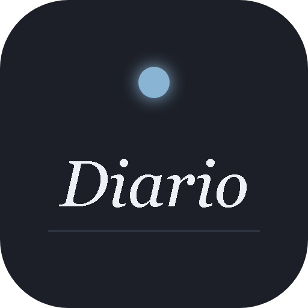
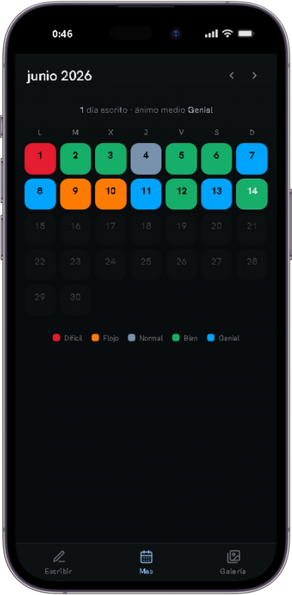
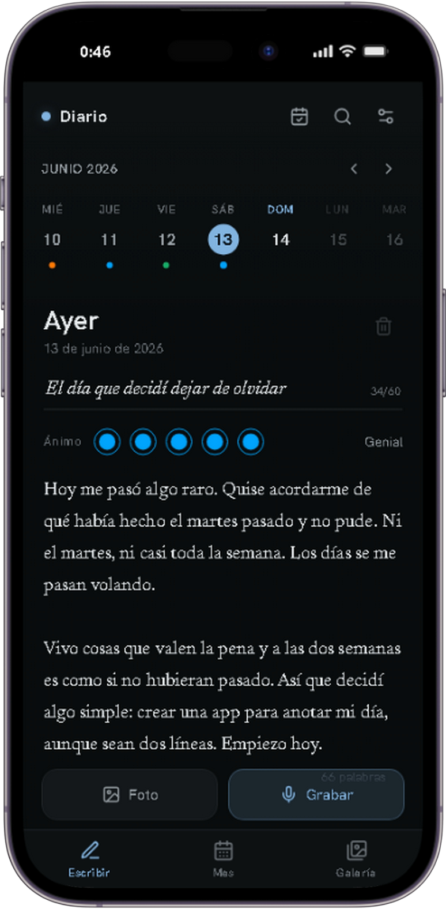
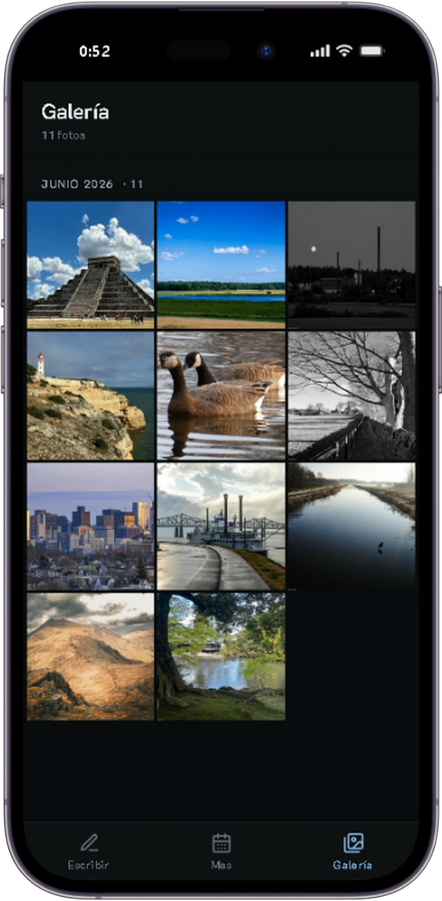

Diario es un espacio privado para registrar cómo estuvo tu día: un titular, tu ánimo, una foto, lo que sientas. Sin cuentas, sin nube — todo se queda en tu teléfono.
Gratis · Sin cuenta · Privado de verdad



No hace falta ser escritor. Solo poner en palabras lo que pasó — y con el tiempo, tener un registro de tu propia vida.
Escribir lo que tenés en la cabeza la despeja. Lo que parecía un nudo, en palabras se entiende mejor.
Los días pasan y se borran. Una línea por día arma, sin que te des cuenta, la historia de tu año.
Releer lo que escribiste hace un mes o un año te muestra cuánto cambiaste — y cuánto seguís siendo vos.
Pensado para que abras, escribas y cierres. Sin distracciones, sin botones de más.
Un titular y todo el espacio para contar lo que quieras. Sin formato, sin reglas.
Registrá cómo te sentiste con un toque. Con el tiempo, ves tus altibajos.
Sumá una imagen que capture el momento, junto a tus palabras.
¿Sin ganas de escribir? Grabá lo que sentís y queda guardado igual.
Volvé a leer lo que escribiste un mes, o un año atrás. Como una cápsula del tiempo.
Navegá tus días por semana o mes. Cada día con entrada queda marcado.
Encontrá ese día, esa frase o ese recuerdo en segundos.
Funciona sin internet y se instala como app. Siempre a mano.
Tu diario no sale de tu teléfono. No hay cuenta que crear, no hay nube donde se suba, no hay servidor que lo guarde. Nadie más puede leerlo — ni siquiera nosotros. Lo que escribís es solo tuyo, como debe ser.
Sin registro, sin configurar nada. Abrís y escribís.
Tocá "Agregar a pantalla de inicio" y queda como una app más, sin pasar por ninguna tienda.
Un titular, tu ánimo y lo que pasó. Sumá una foto o una nota de voz si querés. Tarda lo que tarda un café.
Día a día, casi sin darte cuenta, vas armando la historia de tu vida — y un lugar al que siempre podés volver.
Diario es una PWA: se instala en segundos, funciona sin internet y ocupa muy poco. Sin App Store, sin Google Play.
iPhone / iPad: Safari → botón compartir ⎙ → "Agregar a pantalla de inicio"
Android: Chrome → menú ⋮ → "Agregar a pantalla de inicio" o aceptá el banner automático
Sin formularios, sin tarjeta, sin nada que instalar desde una tienda. Abrís el link y escribís la primera línea.
Empezar a escribir →